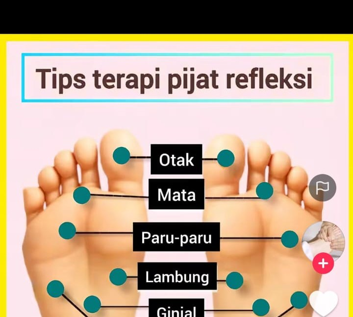
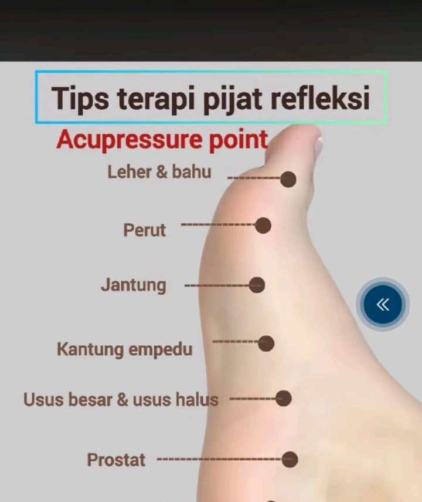
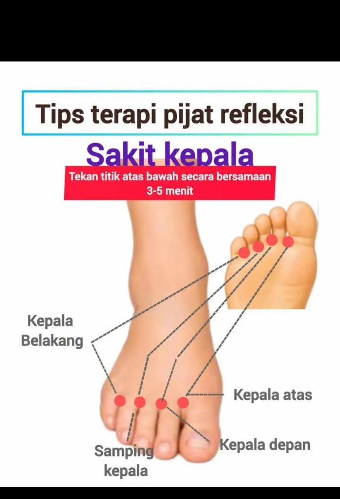
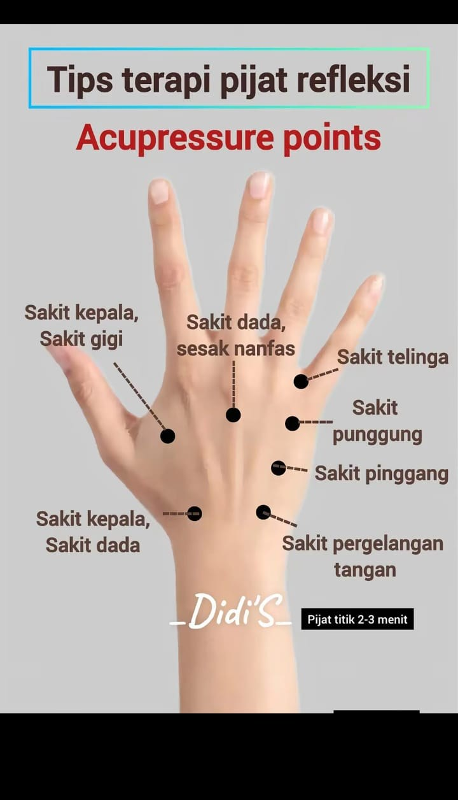
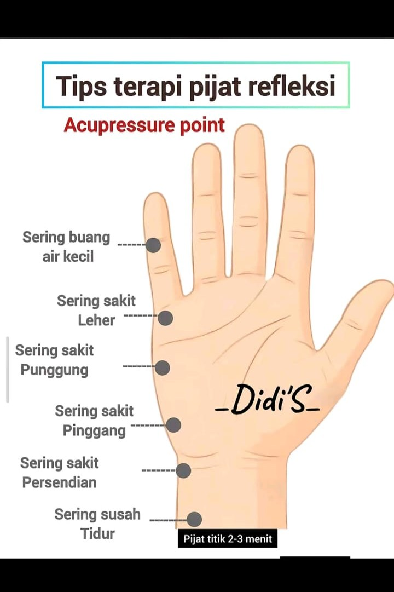
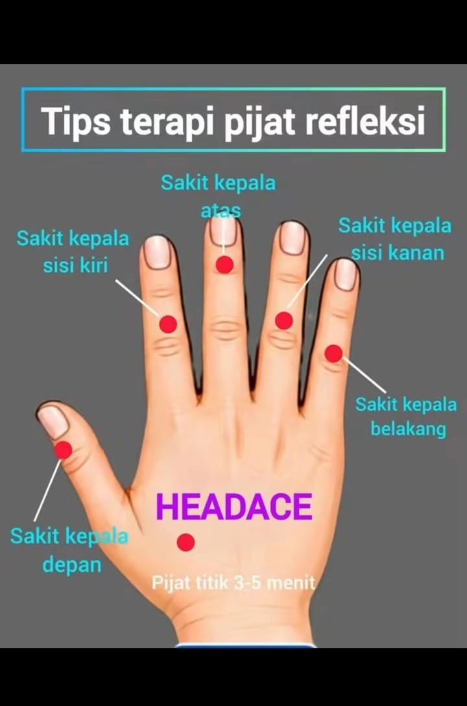

Arsip belajar Pak Paiyo — untuk perawatan dan rileksasi diri. Kelak akan dikaitkan dengan wudhu dan gerakan sholat.

Peta 1 — titik refleksi pada telapak kaki.
Peta 1 — Telapak Kaki (dari atas ke bawah)
Telapak dibaca seperti peta tubuh: bagian atas untuk organ atas, bagian bawah untuk organ bawah.
Otak — ujung ibu jari kaki: untuk pusing, tegang, susah tidur.
Mata — pangkal jari kedua: untuk mata lelah.
Paru-paru — bantalan telapak bagian luar, bawah jari-jari: untuk napas lega.
Lambung — telapak bagian tengah atas: untuk perut kembung dan pencernaan.
Ginjal — telapak bagian tengah sisi luar: untuk pegal pinggang dan kelancaran cairan tubuh.
Hati dan jantung — sisi telapak bagian bawah: untuk kelelahan dan ketegangan.
Usus — di atas tumit: untuk lancarnya buang air.

Peta 2 — titik akupresur pada sisi dalam kaki.
Peta 2 — Sisi Dalam Kaki (dari ibu jari ke tumit)
Leher & bahu — pangkal ibu jari: untuk kaku leher dan pundak.
Perut — lengkung telapak atas.
Jantung — lengkung bagian tengah.
Kantung empedu — di bawah titik jantung.
Usus besar & usus halus — lengkung bawah.
Prostat — menjelang tumit.
Organ reproduksi — tumit bagian bawah.

Peta 3 — titik refleksi untuk sakit kepala.
Khusus — Sakit Kepala
Titik-titiknya berada pada jari-jari kaki, berpasangan antara punggung kaki dan telapak: kepala belakang (jari kelingking), samping kepala (jari keempat), kepala depan (jari tengah), dan kepala atas (jari telunjuk kaki). Caranya menurut peta sumber: tekan titik atas dan bawah secara bersamaan selama 3–5 menit.
Pijat Refleksi Tangan — Punggung Tangan

Peta 4 — titik akupresur pada punggung tangan.
Sakit kepala, sakit gigi — sela ibu jari dan telunjuk.
Sakit dada, sesak nafas — tengah punggung tangan.
Sakit telinga — pangkal jari kelingking.
Sakit punggung — bawah pangkal kelingking.
Sakit pinggang — sisi punggung tangan menjelang pergelangan.
Sakit kepala, sakit dada — pergelangan sisi ibu jari.
Sakit pergelangan tangan — pergelangan sisi kelingking.
Menurut peta sumber: pijat titik 2–3 menit.
Pijat Refleksi Tangan — Sisi Telapak (dari kelingking ke pergelangan)

Peta 5 — titik akupresur pada sisi telapak tangan.
Sering buang air kecil — ruas jari kelingking.
Sering sakit leher — pangkal kelingking.
Sering sakit punggung — tepi telapak bagian atas.
Sering sakit pinggang — tepi telapak bagian tengah.
Sering sakit persendian — menjelang pergelangan.
Sering susah tidur — pergelangan tangan.
Menurut peta sumber: pijat titik 2–3 menit.
Pijat Refleksi Tangan — Khusus Sakit Kepala

Peta 6 — titik refleksi tangan untuk sakit kepala.
Sakit kepala depan — ibu jari.
Sakit kepala sisi kiri — jari telunjuk.
Sakit kepala atas — jari tengah.
Sakit kepala sisi kanan — jari manis.
Sakit kepala belakang — jari kelingking; ditambah satu titik di telapak tangan.
Menurut peta sumber: pijat titik 3–5 menit.
Cara Memijat
Tekan dengan ujung ibu jari tangan, putar perlahan searah jarum jam.
30 detik sampai 1 menit per titik; kerjakan kedua kaki bergantian.
Tekanan cukup terasa "enak-sakit" sedikit — jangan sampai memar.
Waktu baik: pagi sambil peregangan sebelum mandi, atau malam sambil beristirahat.
Catatan: peta ini untuk perawatan dan rileksasi diri — pegal dan lelah umumnya membaik — bukan pengganti pemeriksaan dokter bila ada keluhan yang menetap. Sumber peta: tangkapan layar "Tips terapi pijat refleksi" (Terapi Messege & Refleksi), diarsipkan 27 November 2026.